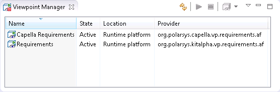
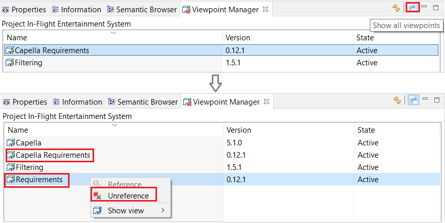
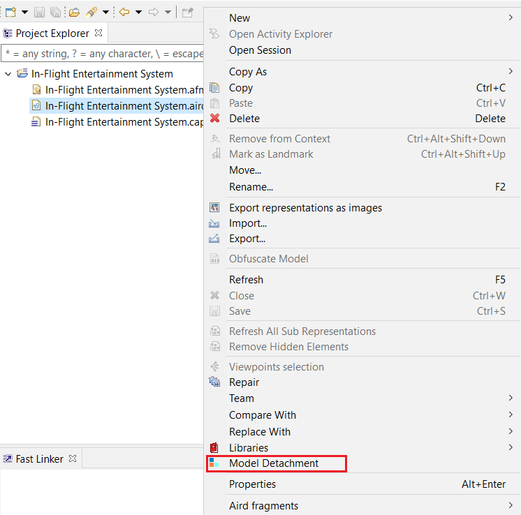
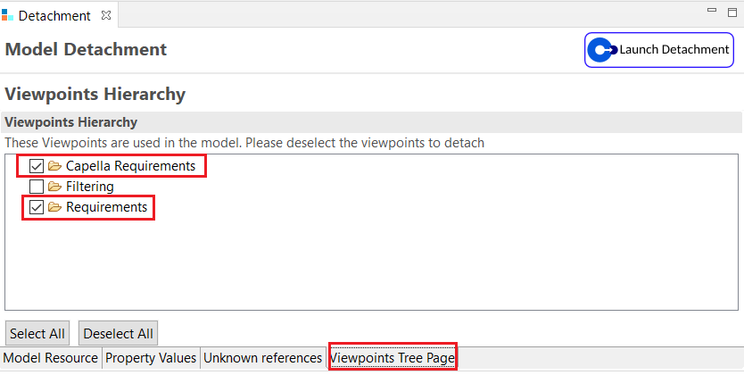

Requirements Viewpoint is a Kitalpha AF Viewpoint.
To see tools and model elements contributed by this viewpoint, you must activate it through the "Viewpoint Manager" view.
To open the "Viewpoint Manager" view, go to "Window">"Show View">"Other..." then open the "Kitalpha" category and select "Viewpoint Manager"
Once the view is open, select an element of your model. Then in the view, right click on the "Capella Requirements" view and click on "Reference".

To check that the viewpoint is working correctly, right click on an Architecture element of your model and check that the Requirements Viewpoint menu is available:
To correctly unreference the Requirements Viewpoint from Viewpoint Manager, check the 'Show all viewpoints' button to reveal the hidden 'Requirements' viewpoint which is also active along with 'Capella Requirements' (known limitation). Make sure to unreference both 'Requirements' and 'Capella Requirements'.

First close the session, then right click on the .aird and select 'Model Detachment' from the opened menu:

In the opened detachment view, select the 'Viewpoint Tree Page' tab and make sure to check both 'Requirements' and 'Capella Requirements' then launch the detachment.
